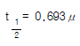
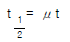
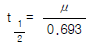
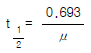
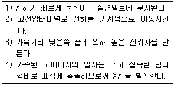
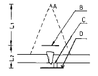
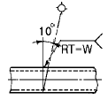
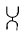
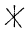
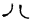

방사선비파괴검사산업기사(구) (2003-05-25 기출문제)
1과목: 방사선투과검사 시험
1. 다음 중 개인 피폭선량계로서 누적선량의 측정에 가장 적합한 것은?
- 전리함
- 비례계수관
- G-M 계수관
- 열형광 선량계
(정답률: 알수없음)

2. 공기중에서 가장 높은 이온화 효과를 일으키는 것은?
- α입자
- β입자
- 중성자
- γ-선
(정답률: 알수없음)
3. 방사선 중 X선, γ선의 특성으로 옳지 않은 것은?
- X선, γ선은 물질에 흡수되지 않고 반사, 굴절한다.
- X선, γ선은 공기를 전리시킨다.
- X선, γ선은 필름을 감광시킨다.
- X선, γ선은 사람의 오감으로 느낄 수 없다.
(정답률: 알수없음)
4. 침투탐상시험에 사용하는 검사제를 건식, 습식 및 속건식으로 분류하였다면 이는 어느 것의 분류를 의미하는가?
- 세척제
- 침투제
- 유화제
- 현상제
(정답률: 알수없음)
5. 와전류탐상시험에서 와전류의 침투깊이에 영향을 주는 인자와 관계가 먼 것은?
- 주파수
- 전도도
- 투자율
- 자장
(정답률: 알수없음)
6. AO2의 투과도계에 대해 관찰실을 밝은 곳과 어두운 곳으로 나누고, 관찰기의 밝기를 고휘도(30000cd/m2)와 저휘도(3000cd/m2)로 나누어 관찰했을 때 필름농도 3.5에서 식별이 가장 잘 안되는 조합은?
- 밝은 곳-저휘도
- 어두운 곳-저휘도
- 밝은 곳-고휘도
- 어두운 곳-고휘도
(정답률: 알수없음)
7. 중성자투과시험의 설명으로 틀린 것은?
- 열중성자를 많이 사용한다.
- 집속(Collimator)의 L/D비가 10이상이어야 유용하다.
- 중성자 발생과 더불어 생기는 γ선 back ground가 높아야 한다.
- 중성자의 강도는 중성자속이 109h/cm3.sec 이상이어야 실용성이 있다.
(정답률: 알수없음)
8. 방사선 투과사진을 투과한 빛의 밝기 2,000룩스에서 주위 환경의 밝기는 1,000룩스였다. 주위 환경 밝기가 0룩스로 바뀌었을 때에 투과사진의 겉보기 콘트라스트는?
- 1/2로 감소한다.
- 2/3로 감소한다.
- 3/2으로 감소한다.
- 1/2로 증가한다.
(정답률: 알수없음)
9. 방사선의 흡수계수가 μ이고 두께가 t라 할 때 반가층을 나타낸 식으로 옳은 것은?




(정답률: 알수없음)
10. X선과 γ선에 대한 설명으로 잘못된 것은?
- 에너지는 침투능력을 결정한다.
- 매우 낮은 주파수를 갖는다.
- 전자파 방사선의 일종이다.
- 매우 짧은 파장을 갖는다.
(정답률: 알수없음)
11. 방사성 동위원소에서 방사선의 강도(큐리)를 높이려면 동 위원소의 크기도 커지게 되는데 이 경우 큐리당 γ선 강도는 어떻게 변하는가?
- 작아진다.
- 커진다.
- 변함이 없다.
- 큐리수에 정비례한다.
(정답률: 알수없음)
12. 방사선투과시험의 탱크현상시 현상액의 보충 방법으로 올바르지 못한 것은?
- 한번에 전체 용량의 10%를 초과하지 않도록 1회 보충액으로 한다.
- 보충액의 총량은 최초 현상액의 2배 정도로 제한하여 보충한다.
- 보충액은 현재의 현상액보다 다소 높은 강도로 보충한다.
- 매번 첨가하는 보충액량은 탱크안 용액 부피의 3%를 초과하도록 보충한다.
(정답률: 알수없음)
13. Co-60의 γ선에 대한 차폐체의 선감쇠계수 μ(㎝-1)와 두께 X(㎝)가 아래와 같을 때 차폐능력이 큰 것부터 나열한 것은 ?(단, build up 계수는 고려하지 않는다.) ㅇ 콘크리트, 철, 납의 μ는 0.133, 0.425, 0.678 cm-1X는 10, 5, 1 cm이다.
- 콘크리트 ＞ 납 ＞ 철
- 납 ＞ 철 ＞ 콘트리트
- 철 ＞ 콘크리트 ＞ 납
- 콘크리트 ＞ 철 ＞ 납
(정답률: 알수없음)
14. 방사선투과시험에서 정착과정의 가장 중요한 역할로 옳은 것은?
- 유제를 연화시킨다.
- 현상과정을 정지시킨다.
- 현상되지 않은 은염을 제거한다.
- 할로겐화은 결정을 은으로 변환한다.
(정답률: 알수없음)
15. γ선원을 사용하여 작업을 완료한 후 점검해야할 사항과 관계가 가장 먼 것은?
- 선원을 선원용기내에 있는지 확인한다.
- 선원의 이동경로를 점검한다.
- 선원용기의 외부선량을 서베이미터로 점검한다.
- 선원용기를 저장함 또는 보관함에 보관한다.
(정답률: 알수없음)
16. 다음 중 X선의 질(quality)을 바꿀 수 있는 것은?
- 관전압
- 관전류
- 전압파형
- 타게트의 원자번호
(정답률: 알수없음)
17. 두께가 50㎜인 압연 강판내부에 미세한 균열 존재시 가장 검출감도가 우수할 것으로 기대되는 비파괴검사법은?
- 침투탐상검사
- 자분탐상검사
- 방사선투과검사
- 초음파탐상검사
(정답률: 알수없음)
18. 다음 중 의료와 산업용에 모두 이용되는 방사선투과 시험방법은?
- 전자 방사선투과시험(Electron radiography)
- 제로 방사선투과시험(Zero radiography)
- 단층 촬영(Tomography)
- 중성자투과시험(Neutron radiography)
(정답률: 알수없음)
19. 다음 중에서 광자에너지가 가장 높은 것은?
- 자외선
- X-선
- 적외선
- 가시광선
(정답률: 알수없음)
20. 방사선 투과사진의 결함 판독시 필요조건이 아닌 것은?
- 투과도계의 식별 최소 선지름
- 투과사진의 농도 범위
- 계조계의 값
- 필름 종류
(정답률: 알수없음)
2과목: 방사선투과검사 시험
21. 양질의 투과사진이 노출시간 10분, 관전류 5mA에서 얻어졌다면 다른 조건은 변화시키지 않고 관전류만 10mA로 높이면 같은 결과의 투과사진을 얻기 위해 노출시간은 얼마로 하면 되는가?
- 2분
- 4분
- 5분
- 10분
(정답률: 알수없음)
22. 중성자차폐 재료로서 가장 알맞는 것은?
- 납
- 우라늄
- 철
- 물
(정답률: 알수없음)
23. X선관 필라멘트가 점화되지 않는 원인으로 틀린 것은?
- 필라멘트의 단선
- 가열변압기의 권선 단락
- 가열 변압기 1차측 저항선 단선
- 양극측 고압케이블의 접촉불량
(정답률: 알수없음)
24. 배관용접부를 촬영한 투과사진에는 종종 불규칙한 형태의 조그만 점상이 용접부위에 하얗게 나타나는데 이는 주로 무엇 때문에 생기는 현상인가?
- 기공
- 슬래그 혼입
- 텅스텐 혼입
- 부적절한 용접방법
(정답률: 알수없음)
25. 다음과 같이 설명되어지는 고에너지 X선장치는?

- 베타트론
- 공진변압기형 X선장치
- 선형가속기
- 반데그라프형 발생장치
(정답률: 알수없음)
26. γ선 투과장치에서 다른 촬영조건은 동일할 때 가장 두꺼운 시험편 촬영에 적합한 방사성 동위원소는?
- 170Tm
- 192Ir
- 60Co
- 137Cs
(정답률: 알수없음)
27. 선원의 크기가 2.3mm, 피사체 두께가 25mm 일 때 기하학적 불선명도를 2.0mm이하로 하려면 선원-필름간거리는 얼마 이상이어야 하나?
- 10.65mm
- 28.75mm
- 53.75mm
- 68.65mm
(정답률: 알수없음)
28. 카세트안의 필름에 직접 접촉된 납스크린의 효과가 아닌것은?
- 필름의 사진 작용을 증대한다.
- 1차방사선에 비해 파장이 긴 산란방사선을 흡수한다.
- 1차 방사선을 강화한다.
- 형광발생으로 노출시간을 감소시킨다.
(정답률: 알수없음)
29. X선 발생장치의 사용시 에이징(aging)에 대한 설명이 바르게 기술된 것은?
- X선 발생장치의 사용전 및 후에 실시한다.
- X선 발생장치의 사용 중에는 실시할 필요가 없다.
- 촬영시간이 오래 걸리는 경우에 실시한다.
- 에이징은 사용하면서 자동적으로 실시된다.
(정답률: 알수없음)
30. 검사체가 중요 부분인 경우 엄격한 투과도계 감도기준을 요구하게 된다. 다음의 유공형 투과도계 감도기준중 가장 고감도 기준을 요구하는 것은?
- 1-1T
- 1-2T
- 2-1T
- 2-2T
(정답률: 알수없음)
31. 방사선투과사진 필름을 건조하기 위한 가장 적당한 온도는?
- 약 20℃
- 약 40℃
- 약 60℃
- 약 80℃
(정답률: 알수없음)
32. 192Ir 10Ci로 선원필름간 거리 50cm에서 20mm 두께의 강용접 부위를 촬영시 적정농도를 얻는데 필요한 투과선량이 500mR이라면 노출시간은? (단, 192Ir의 Rhm은 0.5, 반가층은 10mm)
- 3분
- 6분
- 10분
- 12분
(정답률: 알수없음)
33. 방사선 투과사진에서 황색 얼룩(Yellow stain)의 원인이라고 볼 수 없는 것은?
- 중간수세(Stop bath)의 불충분
- 정착(Fixing)의 불충분
- 수세(Washing)의 불충분
- 건조(Drying)의 불충분
(정답률: 알수없음)
34. 다음 중 X선 발생장치에서 관전압이 높아짐에 따른 현상이 아닌 것은?
- 파장이 짧은 X선이 발생된다.
- X선 빔의 강도가 높아진다.
- 노출시간이 감소된다.
- 투과력이 감소된다.
(정답률: 알수없음)
35. 촬영된 필름을 현상하는 과정에서 너무 온도가 높거나 오염된 정착액에 의해 필름의 기저부분으로부터 감광유제가 들뜨는 현상은?
- 반점(Spotting)
- 주름(Frilling)
- 망상형주름(reticulation)
- 줄무늬(Streak)
(정답률: 알수없음)
36. 다음 방사선투과시험의 연결이 잘못된 장치는?
- 섬광 방사선투과검사법(Flash radiography) - 냉음극(cold cathode)
- 베타트론(Betatron) X선 장치 - 열음극(Hot cathode)
- 반데그래프 X선장치 - 자장(Magnetic field)
- 제로 라디오그래프(Zero radiography) - 셀레늄(Selenium)
(정답률: 알수없음)
37. 이상적인 방사선 투과사진의 조건에 해당되지 않는 것은?
- 최소의 상의 휨
- 뚜렷한 선명도
- 낮은 명암도
- 적당한 농도
(정답률: 알수없음)
38. 파라렉스법에 의한 결함의 깊이 측정시 다음 설명중 맞는 것은?
- 결함상의 이동거리가 선원쪽 마커 이동거리보다 크면 결함의 위치가 선원쪽보다 필름쪽 면에 가깝다.
- 결함상의 이동거리가 필름쪽 마커 이동거리보다 작으면 결함의 위치가 선원쪽보다 필름쪽 면에 가깝다.
- 결함상의 이동거리가 선원쪽 마커 이동거리의 1/2보다 크면 결함의 위치가 필름쪽보다 선원쪽 면에 가깝다.
- 결함상의 이동거리가 필름쪽 마커 이동거리의 1/2보다 작으면 결함의 위치가 필름쪽보다 선원쪽 면에 가깝다.
(정답률: 알수없음)
39. 방사선 투과사진의 기하학적 불선명도를 올바르게 설명한 것은?
- 시편-필름간 거리에 비례하고, 초점크기에 반비례
- 선원 크기에 비례하고, 선원-시편간 거리에 반비례
- 시편-필름간 거리에 반비례하고, 선원-시편간 거리에 비례
- 선원 크기에 반비례하고, 시편-필름간 거리에도 반비례
(정답률: 알수없음)
40. 공업용 방사선 투과사진의 현상제에 포함된 약품중에서 반응 촉진제의 기능을 하는 것은?
- 페니돈(phenidone)
- 하이드로 퀴논(hydroquinone)
- 탄산나트륨(Sodium Carbonate)
- 브롬화칼륨(Potassium bromide)
(정답률: 알수없음)
3과목: 방사선안전관리, 관련규격 및 컴퓨터활용
41. 컴퓨터 네트워크에서 상대방의 컴퓨터가 켜져 있는지 확인하기 위해서 사용할 수 있는 명령어는?
- PING
- ARP
- RARP
- IP
(정답률: 알수없음)
42. 다음 중 네트워크 관련기관을 나타내는 도메인은?
- go.kr
- nm.kr
- ac.kr
- re.kr
(정답률: 알수없음)
43. 인터넷에 대한 설명으로 거리가 먼 것은?
- 전세계의 컴퓨터를 하나의 거미줄과 같이 만들어 놓은 컴퓨터 네트워크 통신망이다.
- 인터넷에 연결되어 있는 컴퓨터의 수는 InterNIC에서 매일 정확히 집계된다.
- TCP/IP라는 통신 규약을 이용해 전세계의 컴퓨터를 연결하고 있다.
- 인터넷을 "정보의 바다"라고도 표현한다.
(정답률: 알수없음)
44. 다음 중 KS D 0242에 규정된 계조계인 것은?
- A형
- B형
- C형
- D1형
(정답률: 알수없음)
45. 방사선 구역을 측정하는데 사용되는 방사선 측정기는?
- 필름뱃지
- 서베이메터
- 개인선량 측정기
- TLD 선량계
(정답률: 알수없음)
46. 주로 40∼100kVp의 X선을 취급하는 작업자의 피폭선량을 필름뱃지로 측정할 때 오차를 적게하기 위해 가장 주의하여야 할 것은?
- 현상처리
- 잠상퇴행
- 입사방향
- 에너지의존성
(정답률: 알수없음)
47. KS B 0845에 의한 강판의 맞대기 이음부 촬영배치에서 상질 B급에 대한 선원과 필름간 거리(L1+L2)는 시험부의 선원측 표면과 필름간의 거리 L2의 m배 이상으로 하도록 요구하고 있다. 계수 m의 값은 상질 B급의 경우 3f/d와 다음 중 어느 수치와 비교하여 큰 쪽의 값을 택하도록 되어 있는가?
- 2
- 3
- 6
- 7
(정답률: 알수없음)
48. KS B 0845에 따라 모재 두께가 10㎜이고, 투과 두께를 측정하기 곤란한 경우 한쪽 덧붙임이 있는 강용접부의 평판 맞대기 이음에 적용할 계조계는?
- 15형
- D10형
- S형
- P1형
(정답률: 알수없음)
49. ASME 규격에 따라 이동 방사선투과시험(In-Motion Radiography)을 할 때 다이아프램(Diaphragm)의 두께는 선정된 선원에 대한 반가층의 몇 배이상이어야 하는가?
- 3배
- 5배
- 8배
- 10배
(정답률: 알수없음)
50. ASME code에서 Ir-192 선원으로 촬영 가능한 철의 최소 두께는?
- 10㎜
- 15㎜
- 19㎜
- 22㎜
(정답률: 알수없음)
51. ASME Sec.V에 따른 필름 콘트라스트에 영향을 미치는 주요 인자가 아닌 것은?
- 필름타입
- 현상조건
- 농도
- 산란 방사선
(정답률: 알수없음)
52. 방사성 동위원소를 사용하고자 하는 자의 행정조치로 올바른 것은?
- 과학기술부 장관의 허가를 받아야 한다.
- 한국엔지니어링진흥협회에 활동주체 신고를 해야 한다.
- 한국비파괴검사 진흥협회장의 허가를 받아야 한다.
- 과학기술부 장관의 승인을 받아야 한다.
(정답률: 알수없음)
53. 강용접부의 방사선투과시험을 할 경우 그림에서 계조계의 적당한 위치는?

- A
- B
- C
- D
(정답률: 알수없음)
54. 740kBq는 몇 Ci 인가?
- 1μCi
- 2μCi
- 10μCi
- 20μCi
(정답률: 알수없음)
55. 일반적으로 이용되는 2-2T ASME 투과도계의 두께는?
- 피사체 두께의 1%
- 피사체 두께의 1.5%
- 피사체 두께의 2%
- 피사체 두께의 4%
(정답률: 알수없음)
56. Ir-192 1Ci로 부터 1m 떨어진 곳의 매시간당 조사선량(RHM값)은 얼마인가?
- 0.25
- 0.55
- 1.00
- 1.35
(정답률: 알수없음)
57. 디스켓을 포맷할 때 포맷형식을 [시스템파일만 복사]로 선택하였을 때 복사되는 파일명은?
- COMMAND.COM
- MSDOS.SYS, IO.SYS
- MSDOS.SYS, IO.SYS, COMMAND.COM
- COMMAND.COM, AUTOEXEC.BAT, CONFIG.SYS
(정답률: 알수없음)
58. 인터넷 접속방식에서 모뎀을 이용해 접속하지만 자신의 PC가 인터넷에 직접 접속되는 것과 같은 효과의 접속방식은?
- LAN 접속
- 터미널 접속
- IPX
- Slip/PPP 접속
(정답률: 알수없음)
59. 원자력법에 규정한 방사선에 대한 연간 등가선량한도의 내용 중 옳지 않은 것은?
- 일반인의 피부에 대하여 50밀리시버트
- 방사선작업종사자의 손, 발에 대하여 500밀리시버트
- 방사선작업종사자의 수정체에 대하여 150밀리시버트
- 수시출입자의 수정체에 대하여 50밀리시버트
(정답률: 알수없음)
60. KS D 0227에서 투과사진의 상질을 A급 및 B급으로 나눈 이유 중 해당되지 않는 것은?
- 제품의 용도
- 제품의 두께변화
- 제품의 모양
- 평판과 유사한 정도
(정답률: 알수없음)
4과목: 금속재료 및 용접일반
61. 크롬(Cr)계 스테인리스강의 취성의 종류로 구분할 수 없는 것은?
- 475℃ 취성
- 저온취성
- 고온취성
- 불꽃취성
(정답률: 알수없음)
62. 전기용접법의 일종으로 아크열이 아닌 와이어와 중간생성물 사이에 흐르는 전류의 저항열(Joule heat)을 이용하는 용접법은?
- 스터드 용접법
- 테르밋 용접법
- 일렉트로 슬래그 용접법
- 원자수소 용접법
(정답률: 알수없음)
63. 한개의 결정핵이 발달하여 나무가지 모양을 이룬 것은?
- 편상세포
- 수지상정
- 과냉
- 고스트라인
(정답률: 알수없음)
64. 중금속(비중:약 7.1)으로 용융점이 약 420℃ 인 것은?
- 알루미늄
- 마그네슘
- 아연
- 베리륨
(정답률: 알수없음)
65. 다음 그림에서 관의 용접부 비파괴검사 기호의 설명 중 맞는 것은?

- 방사선투과 시험법으로 이중벽 촬영방법
- 자분탐상 시험법을 내부탐상에 의한 시험방법
- 초음파 탐상시험법을 내부탐상 의한 시험방법
- 와전류 시험법을 내부선원에 의한 현장탐상 방법
(정답률: 알수없음)
66. 기능재료에서 처음 주어진 특정한 모양의 것을 인장하여 소성변형한 것을 가열에 의하여 원형으로 돌아가는 현상은?
- 초탄성
- 소성변형 현상
- 형상기억 효과
- 피에조(piezo)현상
(정답률: 알수없음)
67. 가스 용접봉 선택조건으로 틀린 것은?
- 모재와 동일 재료를 선택한다.
- 모재보다 용융온도가 낮아야 한다.
- 모재에 충분한 강도를 줄 수 있어야 한다.
- 기계적 성질이 좋아야 한다.
(정답률: 알수없음)
68. 0.2% 탄소강의 상온에서 초석 페라이트의 량은? (공석점의 탄소 함량은 0.8%임)
- 25%
- 35%
- 65%
- 75%
(정답률: 알수없음)
69. 용접 접합면에 홈(Groove)을 만드는 가장 중요한 이유는?
- 용착금속이 잘녹아 들어 완전 용입을 얻기 위해
- 용접시 발생하는 용접변형을 줄이기 위해
- 용접구조물의 정확한 치수조정을 위해
- 용접시간을 단축하기 위해
(정답률: 알수없음)
70. 용접후 잔류 응력을 제거하는 방법이 아닌 것은?
- 노내 풀림법
- 저온응력 완화법
- 국부 풀림법
- 고온응력 완화법
(정답률: 알수없음)
71. 열간가공과 냉간가공의 한계는?
- 재결정온도
- 연성온도
- 소성가공온도
- 용융점
(정답률: 알수없음)
72. 다음 중 점용접의 3대 요소가 아닌 것은?
- 도전율
- 용접 전류
- 가압력
- 통전 시간
(정답률: 알수없음)
73. 순철의 동소변태로 약1400℃에서 γ-Fe ⇆ δ -Fe 의 변태는?
- A1
- A2
- A3
- A4
(정답률: 알수없음)
74. 고탄소강의 용접에 대한 다음 설명 중 틀린 것은?
- 용접성이 나쁘고 용접 터짐이 심하기 때문에 예열이 필요하다.
- 후열을 필요로 하는 경우에는 용접 후 가열하여 연성을 회복시킨다.
- 아크 용접에서는 전류를 높게하여 용입을 얕게한다.
- 열영향부가 단단해져 균열이 나기 쉬운 등 용접성이 좋지 않다.
(정답률: 알수없음)
75. 산소 - 아세틸렌 가스절단에 대한 설명 중 틀린 것은?
- 예열불꽃은 백심 끝이 모재 표면에서 약 1.5∼2.0mm 정도가 좋다.
- 절단면에 예열온도는 약 1200∼1300℃ 정도로 한다.
- 팁 크기와 형상, 산소압력, 절단속도 등은 절단에 영향을 미친다.
- 표준 드래그 길이는 두께 12.7mm에 대하여 2.4mm이다
(정답률: 알수없음)
76. 아크의 크기가 지나치게 길 때의 영향에 대한 설명으로 틀린 것은?
- 아크가 불안정하다.
- 용착이 지나치게 두껍게 된다.
- 용접봉의 소모가 많다.
- 용접부의 강도가 감소된다.
(정답률: 알수없음)
77. 전위(dislocation)의 종류에 속하지 않는 것은?
- 나사전위
- 칼날전위
- 절단전위
- 혼합전위
(정답률: 알수없음)
78. 양은 이라고도 하며 Ni을 함유하는 황동은?
- 포금
- 보론
- 양백
- 칼렛
(정답률: 알수없음)
79. 서밋(cermet)합금의 용도로 관련이 가장 적은 것은?
- 밸브넛트
- 절삭용 공구
- 착암기의 드릴끝
- 내열재료
(정답률: 알수없음)
80. 용접기호중 양쪽 플랜지형 모양의 기본 기호는?



(정답률: 알수없음)